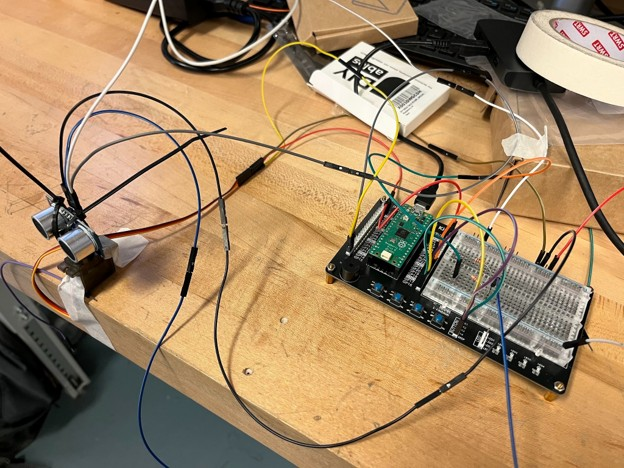

Position
An MG90S servo rotates the HC-SR04 ultrasonic sensor through a commanded angle.
ENGR 1050 Team Project | Fall 2025
A controllable ultrasonic ranging system with a live radar-style display.
Our team built a Raspberry Pi Pico-based device that rotates an ultrasonic sensor, measures the position of objects and transmits angle-distance data to a Pygame visualization. Two physical buttons allow the operator to control the direction of the sensor.

01
Connecting sensing, motion control, serial communication and visualization.
An MG90S servo rotates the HC-SR04 ultrasonic sensor through a commanded angle.
The Pico calculates range from the round-trip duration of each ultrasonic pulse.
Angle and distance values are sent to the laptop over a 115200-baud serial connection.
Pygame converts polar measurements into a moving sweep line and fading detection blips.
02
The project required coordinated development across the physical circuit and two Python programs.
MicroPython configured PWM for the servo, trigger and echo pins for the sensor, and pull-up inputs for the left and right buttons. The program mapped angles from 0–180° into the servo duty-cycle range and returned a maximum value when the sensor timed out.
The desktop program read serial data, drew range arcs and 30° angle divisions, converted polar coordinates to screen positions and maintained a fading history of detected objects. A 100 cm display range was selected for the laboratory environment.
03
Bench testing checked object detection, controllability and distance accuracy.

04
The system met the team’s success criteria: it detected stationary and moving objects, identified objects as the field of view moved over them, and reproduced 5 cm and 40 cm test distances on the radar display. The project strengthened my experience with embedded Python, PWM, sensors, serial data and real-time visualization.